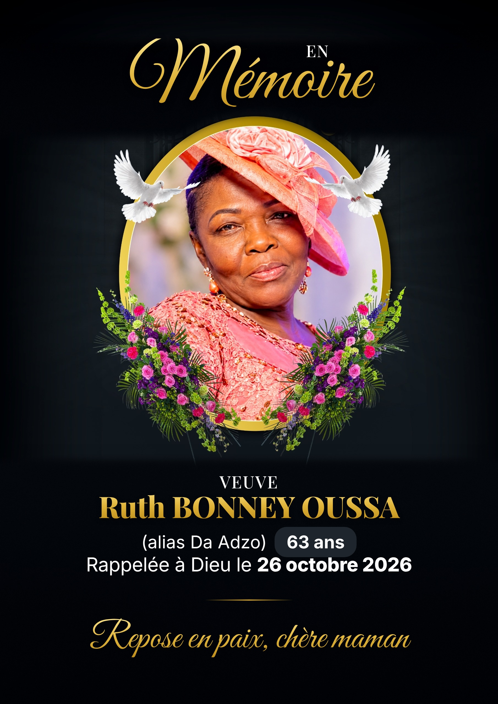

« Jésus lui dit : Je suis la résurrection et la vie. Celui qui croit en moi vivra, quand même il serait mort. »
JEAN 11:25
Repose en paix, chère maman
Elle restera à jamais dans nos cœurs

à la résidence familiale
au cimetière d’Ewegbe-Hohoe
Madam Ruth Bonney Oussa, affectueusement appelée Da Adzo, est née le 30 décembre 1963. Elle était la fille chérie de feu M. Thomas Komla Adzrakutse (d'Alavanyo Abehenease) et de feue Mme Martha Yawa Adzinai (de Gbi Wegbe), tous deux de précieuse et regrettée mémoire.
Elle a grandi au sein d'un foyer ancré dans la foi, la discipline et le sens du devoir, forgeant très tôt un caractère moral solide. Ces principes fondamentaux l'ont guidée et honorée tout au long de sa vie.
Épouse dévouée, mère aimante, grand-mère attentionnée, sœur, tante et amie fidèle, elle a bâti aux côtés de son époux un foyer empreint de chaleur, d'amour et d'hospitalité, où chaque visiteur trouvait refuge. Il y a onze ans, après le rappel à Dieu de son cher époux, elle a courageusement porté seule le flambeau familial avec une force et une dignité admirables.
Femme de conviction, de travail et d'initiative, Da Adzo s'est distinguée dans le commerce par son ardeur, sa résilience et son sens aigu des affaires. Son dévouement lui a non seulement permis de pourvoir dignement aux besoins de sa famille, mais aussi de marquer durablement sa communauté par sa générosité et son exemple.
Avant toute chose, Da Adzo était une fervente femme de prière. Convaincue que la destinée d'une famille se forge à genoux, elle élevait quotidiennement les siens devant le Seigneur, dans le secret de sa chambre comme au cœur de son foyer. Ses prières demeurent le plus précieux héritage qu'elle laisse derrière elle.
Pendant les onze années qui ont suivi le départ de son époux, elle n'a jamais fléchi. S'appuyant avec une foi inébranlable sur le Seigneur, elle s'est consacrée entièrement à l'éducation, à l'instruction et à la croissance spirituelle de ses enfants. Corrigeant avec tendresse, encourageant avec amour et les exhortant à l'intégrité, elle leur a appris à pardonner et à marcher dans la vérité. Aujourd'hui, ses enfants reconnaissent que tout ce qu'ils sont, ils le doivent à la grâce de Dieu et aux prières de cette mère exceptionnelle.
Femme de grâce et de foi profonde, elle a dédié sa vie au service des autres. Immortalisée dans les mémoires pour sa bonté naturelle et sa force tranquille, son souvenir restera gravé à jamais dans le cœur de tous ceux qui l'ont connue.
Elle laisse dans le deuil cinq enfants qu'elle a chéris, portés dans la prière et conduits sur les voies du Seigneur : Huldah Orounla, Michèle Oussa, Godwill Oussa, Anne Marie Oussa et Jean Claude Oussa. Bien que profondément affligés par cette grande perte, ils rendent grâce à Dieu pour le privilège d'avoir été guidés par une telle mère et s'engagent à perpétuer son héritage de foi et d'amour.
Grand-mère aimante et protectrice, elle a entouré ses petits-enfants de bénédictions et de prières, leur inculquant la crainte de Dieu et l'amour de la famille. Ils demeurent sa fierté et la continuité de son héritage spirituel.
Elle laisse également dans la peine ses frères et sœurs : Theresa Videkpui, Noah Videkpui, M. Yohanes Mawusi Adzrakutse, le Pasteur Emmanuel Kosi Adzrakutse, M. David Adzei, Mme Florence Adzei-Awuda et Sœur Abuya, ainsi que ses neveux, nièces et la famille élargie.
Madam Ruth Bonney Oussa a combattu le bon combat, achevé la course et gardé la foi. La couronne de justice lui est désormais réservée. Qu'elle repose en paix dans les bras du Seigneur qu'elle a tant aimé et servi avec fidélité.
Que son âme douce et paisible repose dans la lumière divine jusqu'au jour de la résurrection.
Notre mère, Madame OUSSA, Sister Adjo, est allée rejoindre son Seigneur à l'âge de 63 ans.
Les mots nous manquent pour dire ce que nous ressentons, mais nous savons une chose : elle n'est pas perdue. Elle est auprès de Celui qu'elle aimait de tout son cœur.
« Je suis la résurrection et la vie. Celui qui croit en moi vivra, quand même il serait mort ; et quiconque vit et croit en moi ne mourra jamais. » – Jean 11:25-26
Notre mère ne nous a pas seulement parlé de Dieu : elle nous L'a fait connaître par sa vie. Nous avons appris à aimer le Seigneur en la regardant L'aimer. Nous avons appris à prier en l'entendant prier. Nous avons appris à croire en la voyant croire, même quand tout semblait difficile.
Combien de fois nous a-t-elle dit de ne pas abandonner, de rester debout, de persévérer dans la foi ? Quand nous étions fatigués, découragés ou tentés de lâcher prise, sa voix était là : « Tiens bon. Dieu est fidèle. » Aujourd'hui encore, ces paroles résonnent en nous, et nous les porterons toute notre vie.
« Elle ouvre la bouche avec sagesse, et des instructions bienveillantes sont sur sa langue. Ses fils se lèvent et la disent heureuse. » – Proverbes 31:26, 28
Maman, aujourd'hui nous nous levons, et nous te disons heureuse et bénie.
Sister Adjo était une femme de prière. Dans le secret de sa chambre, à genoux, elle nous portait chacun devant Dieu. Elle priait pour nos études, nos parcours, nos familles, nos combats. Elle priait pour son église, pour ses frères et sœurs, et même pour des personnes que peu de gens remarquaient.
Nous ne saurons jamais tout ce que Dieu a fait en réponse à ses prières. Mais nous savons qu'une grande part de ce que nous sommes et de ce que nous avons, nous la devons à ses genoux usés devant le trône de la grâce. Ses prières ne sont pas mortes avec elle : elles continuent de plaider pour nous devant Dieu.
« Priez sans cesse. » – 1 Thessaloniciens 5:17
Elle a vécu ce verset, simplement, chaque jour.
Et il y avait ce sourire. Ce sourire qui ne la quittait jamais. Celui qui accueillait tout le monde, jeunes ou vieux, connus ou inconnus. Celui qui rassurait sans un mot, qui désarmait les cœurs fermés et réchauffait les foyers les plus froids.
Son sourire n'était pas celui d'une vie sans épreuves ; notre mère a connu ses combats. Mais elle avait compris que la joie de l'Éternel est une force, et elle la portait sur son visage comme un témoignage.
« Elle est revêtue de force et de gloire, et elle se rit de l'avenir. » – Proverbes 31:25
Aujourd'hui, nous pleurons. Nous ne le cachons pas ; Jésus Lui-même a pleuré devant le tombeau de son ami. Notre peine est réelle, parce que notre amour est réel. Il y aura des jours où sa voix nous manquera, où sa chaise vide pèsera sur nous, où nous voudrons simplement l'entendre dire : « Mon enfant, prends courage. »
Mais nous ne sommes pas dans la tristesse comme ceux qui n'ont point d'espérance.
« Nous ne voulons pas, frères, que vous soyez dans l'ignorance au sujet de ceux qui dorment, afin que vous ne vous affligiez pas comme les autres qui n'ont point d'espérance. » – 1 Thessaloniciens 4:13
Nous avons l'assurance qu'elle dort en Christ, et que nous la reverrons.
« Il essuiera toute larme de leurs yeux, et la mort ne sera plus, et il n'y aura plus ni deuil, ni cri, ni douleur. » – Apocalypse 21:4
Maman, tu as achevé ta course. Tu n'étais pas parfaite – personne ne l'est – mais tu as été fidèle. Tu as aimé Dieu, tu as aimé les gens, tu as élevé tes enfants dans la crainte du Seigneur. Aujourd'hui, nous pouvons dire de toi ce que l'apôtre Paul disait de lui-même :
« J'ai combattu le bon combat, j'ai achevé la course, j'ai gardé la foi. Désormais, la couronne de justice m'est réservée. » – 2 Timothée 4:7-8
Et nous croyons que le Seigneur t'a accueillie par ces paroles : « C'est bien, bon et fidèle serviteur ; entre dans la joie de ton maître. » (Matthieu 25:21)
Maman, nous te faisons une promesse, au nom de tous tes enfants. Nous garderons la foi que tu nous as transmise. Nous continuerons à prier, à nous aimer, à nous soutenir et à nous pardonner. Nous garderons ton sourire vivant dans nos foyers et dans nos vies. Et nous veillerons à ce que ce que tu as semé avec larmes, nous le moissonnions avec joie.
« Ceux qui sèment avec larmes moissonneront avec chants d'allégresse. » – Psaume 126:5
Nous ne disons pas adieu, mais à bientôt dans la maison de notre Père.
Merci pour ta foi, merci pour tes prières, merci pour ton sourire, merci pour ton amour. Nous t'aimons, et nous t'honorerons toute notre vie.
Repose en paix, Sister Adjo. Ton sourire, ta foi et ton amour vivent en nous.